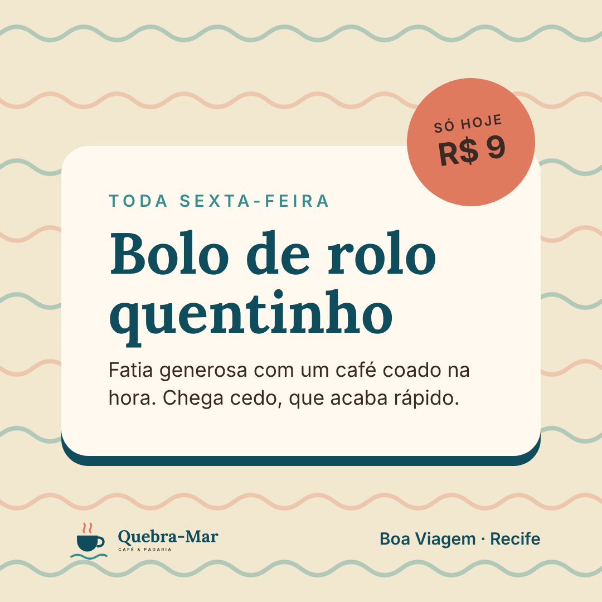
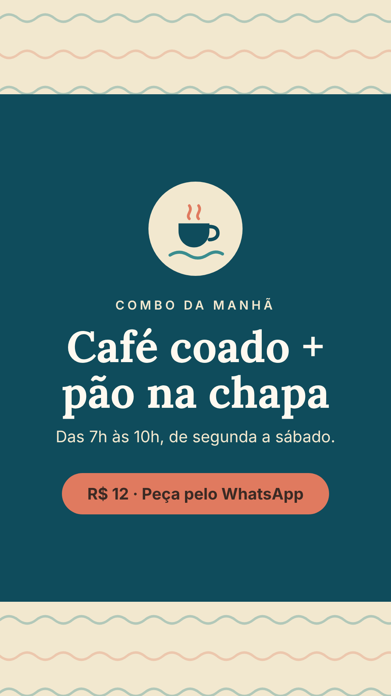

Body text, prices, labels and buttons. SemiBold for small caps with wide tracking.
Assets & usage
Wave pattern for packaging, cups and social backgrounds. Coral is an accent only: steam, buttons, highlights. Minimum size: icon 24 px, horizontal logo 120 px wide.
Use the reversed logo on Maré or photos; never on Coral.
Social templates


Feed post (1080×1080) and story (1080×1920) built as editable HTML templates: swap the text and price, keep the layout.